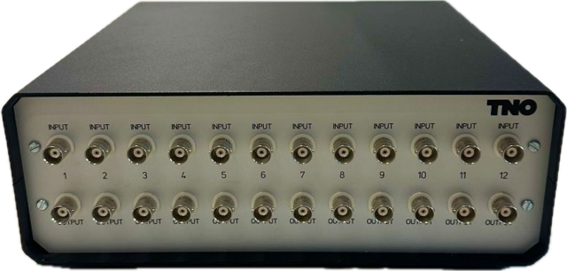

Prototypebouw
Van idee naar werkend prototype. Ik denk mee over wat er nodig is, ontwerp de elektronica en printplaat, teken de behuizing in SolidWorks en bouw het geheel. Inclusief solderen, testen en bijsturen tot het doet wat het moet doen.
Voorbeeldprojecten
LED Cube: schema, PCB, software en behuizing volledig zelf ontworpen
Closure Unit: meetsysteem voor TNO, van idee tot werkend product
Vraag dit aan
